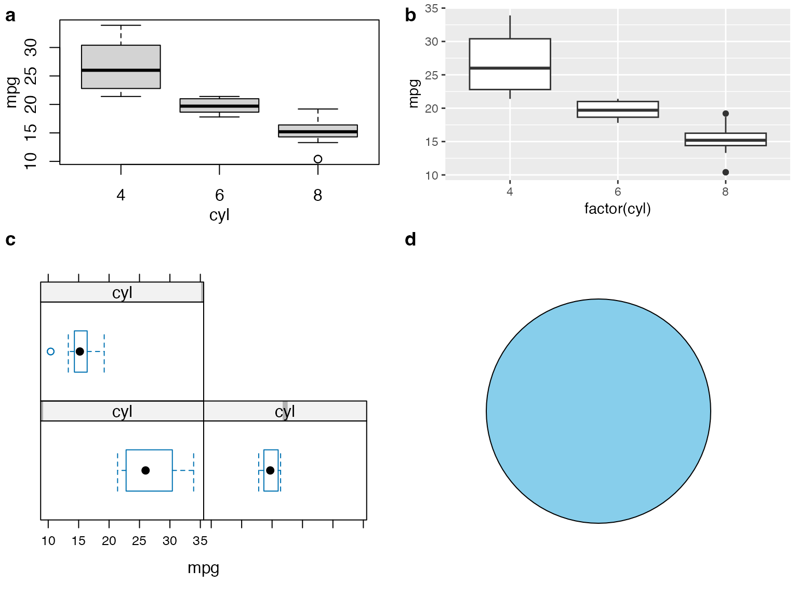

Mixing different plotting frameworks
Claus O. Wilke
2019-07-11
mixing_plot_frameworks.RmdAll cowplot functions that take plot objects as input (ggdraw(), draw_plot(), plot_grid()) can handle several different types of objects in addition to ggplot2 objects. Most importantly, they can handle plots produced with base R graphics. However, this functionality is only available if you have the package gridGraphics installed.
As the first example, we draw a base graphics plot with ggdraw() and style the background with the ggplot2 themeing mechanism.
library(ggplot2)
library(cowplot)
# define a function that emits the desired plot
p1 <- function() {
par(
mar = c(3, 3, 1, 1),
mgp = c(2, 1, 0)
)
boxplot(mpg ~ cyl, xlab = "cyl", ylab = "mpg", data = mtcars)
}
ggdraw(p1) +
theme(plot.background = element_rect(fill = "cornsilk"))
We can also add a logo to the plot.
logo_file <- system.file("extdata", "logo.png", package = "cowplot")
ggdraw() +
draw_image(
logo_file,
x = 1,
width = 0.13, height = 0.2,
hjust = 1
) +
draw_plot(p1)
And we can draw base graphics and ggplot2 graphics side-by-side in a plot grid.
Base R plots can be stored in the form of functions that emit the desired plots (demonstrated above), as recorded plots, or using a convenient formula interface.
To create a recorded plot, we first draw the base plot, then we record it with recordPlot(), and then we can draw it with ggdraw().
# create base R plot
par(mar = c(3, 3, 1, 1), mgp = c(2, 1, 0))
boxplot(mpg ~ cyl, xlab = "cyl", ylab = "mpg", data = mtcars)
# record previous base R plot and then draw through ggdraw()
p1_recorded <- recordPlot()
ggdraw(p1_recorded)
We can store arbitrarily complex plotting code in formulas by enclosing it into curly braces.
# store base R plot as formula
p1_formula <- ~{
par(
mar = c(3, 3, 1, 1),
mgp = c(2, 1, 0)
)
boxplot(mpg ~ cyl, xlab = "cyl", ylab = "mpg", data = mtcars)
}
ggdraw(p1_formula)
There is also support for lattice graphics and grid grobs.
# base R
p1 <- ~{
par(
mar = c(3, 3, 1, 1),
mgp = c(2, 1, 0)
)
boxplot(mpg ~ cyl, xlab = "cyl", ylab = "mpg", data = mtcars)
}
# ggplot2
p2 <- ggplot(data = mtcars, aes(factor(cyl), mpg)) + geom_boxplot()
# lattice
library(lattice)
p3 <- bwplot(~mpg | cyl, data = mtcars)
# elementary grid graphics objects
library(grid)
p4 <- circleGrob(r = 0.3, gp = gpar(fill = "skyblue"))
# combine all into one plot
plot_grid(p1, p2, p3, p4, rel_heights = c(.6, 1), labels = "auto")
Other packages are supported as long as they return grid grobs.
library(VennDiagram)
p_venn <- draw.pairwise.venn(
100, 70, 30,
c("First", "Second"),
fill = c("light blue", "pink"),
alpha = c(0.7, 0.7),
ind = FALSE
)
# plot venn diagram and add some margin and enclosing box
ggdraw(p_venn) +
theme(
plot.background = element_rect(fill = NA),
plot.margin = margin(12, 12, 12, 12)
)